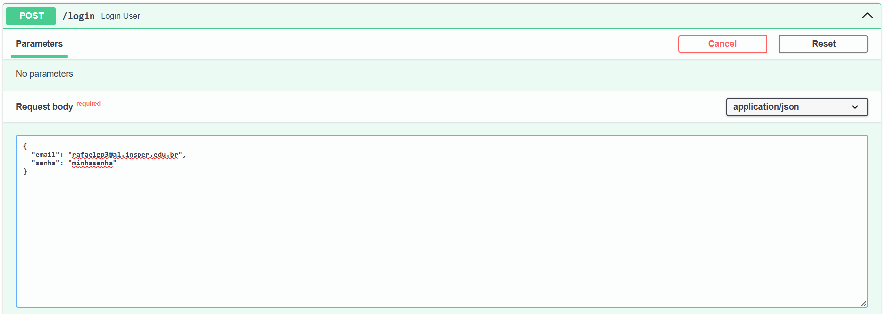
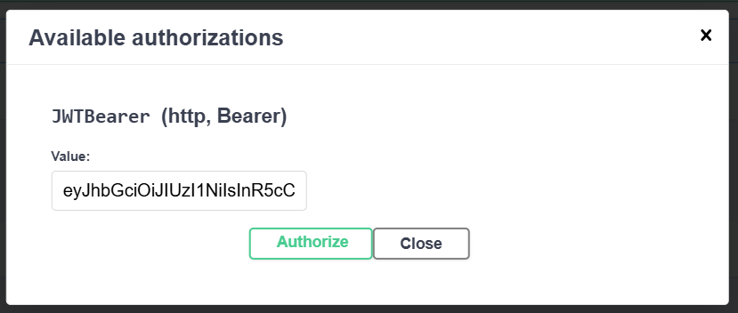

Sobre a etapa 1
Na primeira etapa, foi feita uma API conectada a um banco de dados Postgres, em uma aplicação conteinerizada, com o intuito de aprender conceitos como Docker, autenticação JWT, AWS, APIs, entre outros.
Um dos requisitos era fazer um web scraping ou usar uma api atualizada regularmente. Neste projeto, escolhi Jikan, uma api com dados de animes, mangás, personagens, produtoras, usuários, entre outros que estão no site MyAnimeList.
Executando a aplicação
- Baixe o compose.yaml ou copie:
name: projeto
services:
db:
image: postgres:17
environment:
- POSTGRES_DB=${POSTGRES_DB:-projeto}
- POSTGRES_USER=${POSTGRES_USER:-projeto}
- POSTGRES_PASSWORD=${POSTGRES_PASSWORD:-projeto}
ports:
- 5432:5432
healthcheck:
test: ["CMD-SHELL", "pg_isready -U ${POSTGRES_USER:-projeto} -d ${POSTGRES_DB:-projeto}"]
interval: 10s
retries: 5
start_period: 30s
timeout: 10s
app:
image: rafaelgp3/projetocloud-fastapi:v1
environment:
- POSTGRES_DB=${POSTGRES_DB:-projeto}
- POSTGRES_USER=${POSTGRES_USER:-projeto}
- POSTGRES_PASSWORD=${POSTGRES_PASSWORD:-projeto}
ports:
- 8000:8000
depends_on:
db:
condition: service_healthy
restart: true
- No mesmo diretório do compose.yaml, rode o conteiner:
docker compose up
-
Para testar, pode entrar na documentação própria do FastAPI (Swagger) em http://localhost:8000/docs
-
Quando quiser sair, pare o conteiner (rode esse comando em outro terminal):
docker compose down
Rotas
POST /registrar - Requer no corpo da requisição 3 chaves: "email", "nome" e "senha". - Em sucesso, devolve um token jwt, com expiração de 30 minutos, no formato {"jwt": ${token}}
Exemplo de corpo da requisição:
 Exemplo de resultado:
Exemplo de resultado:

POST /login - Requer no corpo da requisição 2 chaves: "email" e "senha". - Em sucesso, devolve um token jwt, com expiração de 30 minutos, no formato {"jwt": ${token}}
Exemplo de corpo da requisição:

Exemplo de resultado:

GET /consulta - Requer no cabeçalho um token jwt válido (obtido a partir das rotas registrar ou login) - Em sucesso, devolve dados de um anime aleatório da API mencionada anteriormente pela rota https://api.jikan.moe/v4/random/anime. Alguns dados retornados incluem o nome do anime, data de lançamento, gêneros, sinopse, estúdio que produziu, entre outros.
Clique no cadeado para autenticação:

Coloque o token obtido anteriormente:

Um exemplo de resultado:

Dockerização
Para criar a imagem, foram feitos esses passos:
Entrar no diretório com a Dockerfile:
cd app
Usar dockerx (para criar imagens para múltiplas arquiteturas):
docker buildx create --use
Criar a imagem e dar push para o DockerHub:
docker buildx build --platform linux/amd64,linux/ar64 -t rafaelgp3/projetocloud-fastapi:v1.0 -t rafaelgp3/projetocloud-fastapi:latest . --push